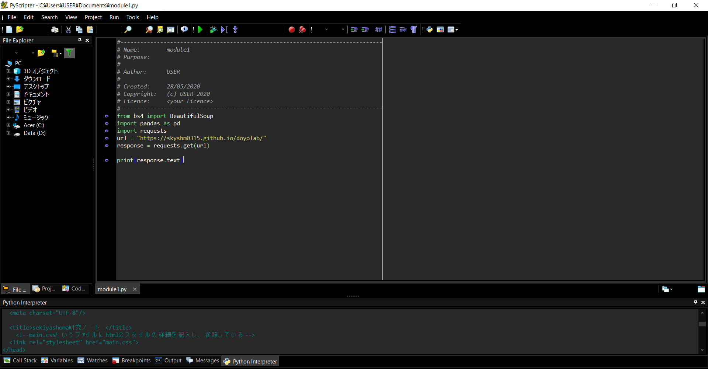
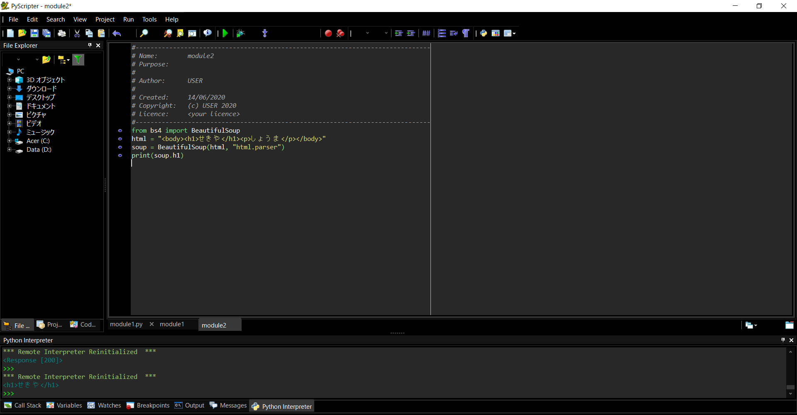

ゼミ生みんなの進捗状況を確認するには、いちいちurlを踏まなくてはならない。
全員のを確認するのにurlを40回踏む必要がある。
gitをなかなか更新しない人のサイトを確認する作業は特に無駄になってしまう。(ごめんなさい)
この状態だと知識の共有に繋がりづらい。また興味のある分野の先行している先輩の情報を探すのに苦労してしまう。
どうにかしよう!
今回は完成までの流れをこのサイトや授業で教わった記憶をたどりながらやっていきたいと思う。
大まかに
１用件定義→どんな機能をつけるか
２外部設計→どんな見た目か
３内部設計→中でどう動くか
４プログラミング→実際にコードを書く
５単体テスト→一機能ごとに動作確認
６結合テスト→一つのものにして動作確認
７総合テスト→最後に一から確認
となっています。
大きく分けて機能は二つ。一つ目は、サイトが更新されると通知される機能。
二つ目は、気になるワードから検索できる機能。
今回は一つ目を作っていきたい。
更新した人の名前とurlが表のように表示されるもの。
中でどうやって動いているかを書いていく。
自分たちのhtmlの中にversionという名前をつけたclassを作っておく(2020年6月14日だったら20200614にする)
↓
requestというpythonのモジュールを使ってhtmlを取得する。
↓
beautifulsoupというモジュールを使ってこのversionと名前の付けたclassを取得する。
↓
取得した数字を例えばcsvファイルのようなものに保存する。
↓
if関数を使う。この取得した番号(20200614)を前回取得した番号と比較して大きければ、言い換えると新しければその人のurlと名前を表示する。
↓
これを自動的に毎日行うようにする。これをクローラーと呼ぶ。
urlとhtmlの取得

htmlの中から特定の要素を取得
